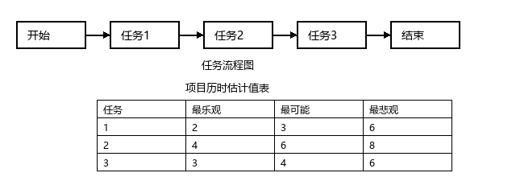

一. 填空题（共6题，19.2分）
1.(填空题)
（__）决定了项目在给定的金钱关系和资源条件下完成项目所需的最短时间。
2.(填空题)
（__）是一种特殊的资源，以其单向性、不可重复性而有别于其他资源。
3.(填空题)
在 ADM 网络图中，箭线表示（__）。
5.(填空题)
工程评估评审技术采用加权平均的公式是（__）。
6.(填空题)
任务之间的排序依据主要有（__）、（__）、（__）等。
二. 单选题（共11题，35.2分）
8.(单选题)
“软件编码完成之后，我才可以对它进行软件测试”，这说明了哪种依赖关系？
9.(单选题)
（ ）可以显示任务的基本信息，能方便查看工期、开始结束时间以及资源信息
10.(单选题)
（ ）是项目冲突的主要原因，尤其在项目后期
11.(单选题)
以下哪一项是项目计划中灵活性最小的因素？
16.(单选题)
（ ）可以表示敏捷项目的进度，并且能表示剩余任务
17.(单选题)
以下哪一项不是编制进度的基本方法？
三. 判断题（共11题，35.7分）
19.(判断题)
在项目进行过程中，关键路径是不变的。
20.(判断题)
在 PDM 网络图中，箭线表示任务之间的逻辑关系，节点表示活动。
21.(判断题)
项目各项活动之间不存在相互联系与相互依赖关系。
22.(判断题)
在资源冲突问题中，过度分配也属于资源冲突。
23.(判断题)
浮动是在不增加项目成本的条件下，一个活动可以延迟的时间量。
24.(判断题)
在使用应急法压缩时间时，不一定要在关键路径上选择活动来进行压缩。
25.(判断题)
时间是项目规划中灵活性最小的因素。
27.(判断题)
当估算某活动时间存在很大不确定性时应采用 CPM 估计。
28.(判断题)
敏捷项目一般采取远粗近细的计划模式。
四. 其它（共4题，含1道带图题）
29.(其它)
对一个任务进行进度估算时，A 乐观估计 6 天，B 悲观估计 24 天，C 最有可能是 12 天，历时估算介于 10 到 16 天的概率是多少？
30.(其它)
请将下图所示的 PDM（优先图法）网络图改画为 ADM（箭线法）网络图。
31.(其它)
根据任务流程图和项目历时估算值，采用 PERT 方法求出项目在 14.57 天内完成的概率近似值。
32.(其它)
根据下面任务流程图和下表给出的项目历时估算值，采用PERT方法估算，求出项目在14.57天内完成的概率的近似值。
